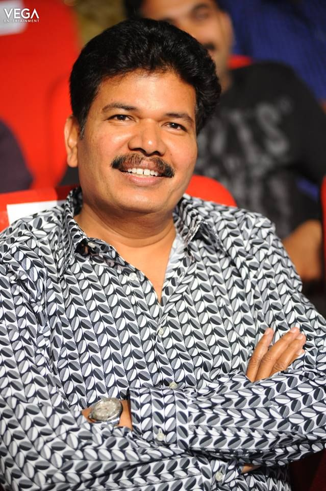

|  |
Director Shankar, born Shankar Shanmugam on August 17, 1963, is one of India's most influential filmmakers, known for his grand visual spectacles and socially relevant themes. He made his directorial debut with Gentleman (1993), and gained fame for his unique storytelling style in films like Indian, Mudhalvan, Sivaji, Enthiran, and 2.0. Shankar's films often feature cutting-edge technology, special effects, and strong social messages, earning him both critical acclaim and commercial success. He has won numerous awards, including National Film Awards. Shankar is a pioneer in Indian cinema, pushing the boundaries of filmmaking with each project. |